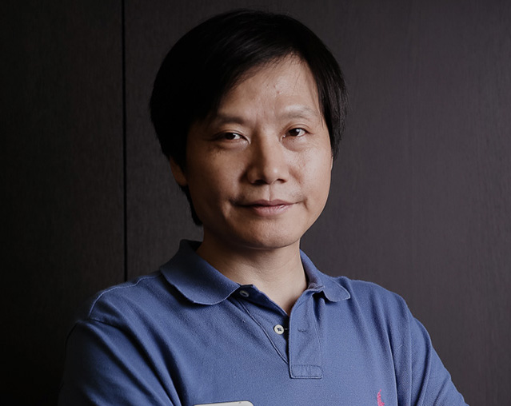
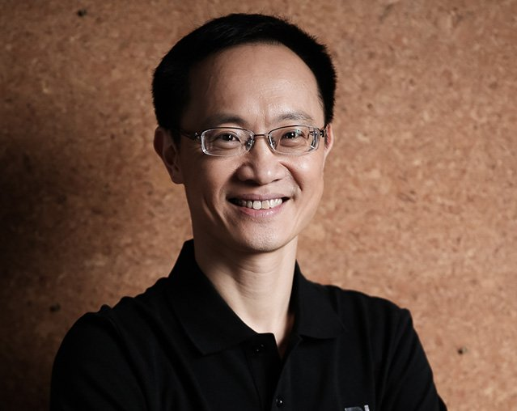
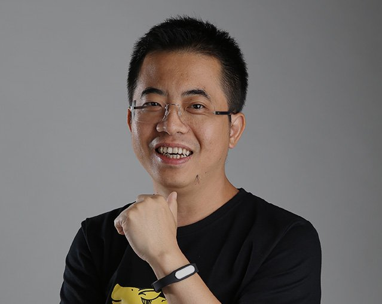
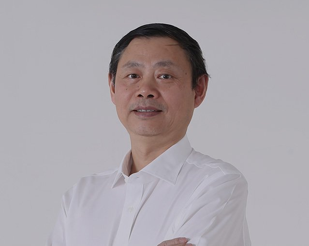
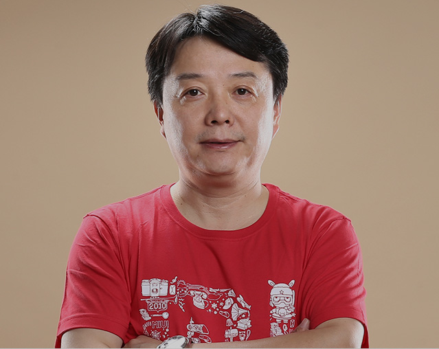
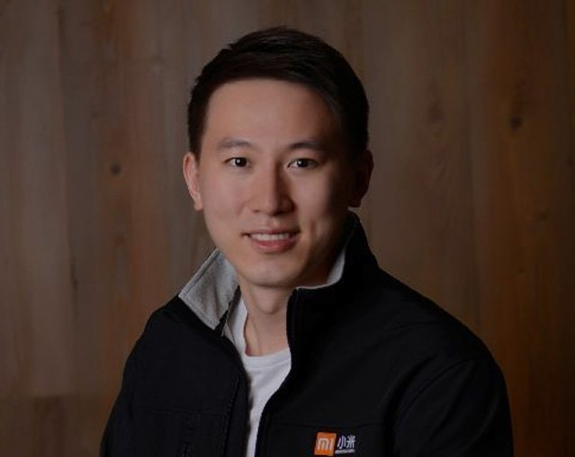
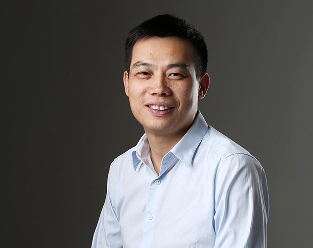

ТЕХНОЛОГИЯ КАЧЕСТВА ДОСТУПНА ДЛЯ ВСЕХ!

LEI JUN
Lei Jun was part of the founding team of Kingsoft in 1992 and became CEO in 1998. A year later, he founded the IT information service and download website Joyo.com. After Kingsoft successfully completed their IPO, Lei Jun stepped down from his position and became Vice Chairman at Kingsoft. In the early 2000’s, he invested in many successful start-up companies like YY, UC and Vancl as an angel investor, and on April 6, 2010, he founded Xiaomi. In July 2011, he returned to Kingsoft as Chairman of the Board. Lei Jun is currently the Chairman and CEO of Xiaomi.
Lei Jun was part of the founding team of Kingsoft in 1992 and became CEO in 1998. A year later, he founded the IT information service and download website Joyo.com. After Kingsoft successfully completed their IPO, Lei Jun stepped down from his position and became Vice Chairman at Kingsoft. In the early 2000’s, he invested in many successful start-up companies like YY, UC and Vancl as an angel investor, and on April 6, 2010, he founded Xiaomi. In July 2011, he returned to Kingsoft as Chairman of the Board. Lei Jun is currently the Chairman and CEO of Xiaomi.

LIN BIN
Lin Bin graduated from Sun Yat-sen University in 1990, where he obtained an Electronic Engineering degree. He received his Master’s Degree in Computer Science at Drexel University in 1992. Soon after, he joined Microsoft, where he worked as Lead Project Engineer, Senior Development Manager of MSRA, and Engineering Director of MSRA. Lin Bin also contributed to the R&D of Microsoft products, including Windows Vista and IE 8. In 2006, he joined Google as the Vice President of the Google China Institute of Engineering and the Engineering Director of Google Global. He was in charge of building and managing Google China’s Mobile Search and the Android App Localization teams.
Lin Bin graduated from Sun Yat-sen University in 1990, where he obtained an Electronic Engineering degree. He received his Master’s Degree in Computer Science at Drexel University in 1992. Soon after, he joined Microsoft, where he worked as Lead Project Engineer, Senior Development Manager of MSRA, and Engineering Director of MSRA. Lin Bin also contributed to the R&D of Microsoft products, including Windows Vista and IE 8. In 2006, he joined Google as the Vice President of the Google China Institute of Engineering and the Engineering Director of Google Global. He was in charge of building and managing Google China’s Mobile Search and the Android App Localization teams.

LI WANQIANG
Wanqiang is the Chief Brand Officer of Xiaomi. He co-founded Xiaomi in 2010 and has previously led MIUI and mi.com e-commerce. A significant contributor to both hardware and software design, he is also the creative mind behind popular internet keywords like “F-code”, “Mi Fan Festival” and more. Wanqiang joined Kingsoft in 2000 and co-founded their UIUX Design Centre. He served in several positions including Kingsoft Dictionary General Manager, Chief UI Designer, Design Center Director, and Internet Content Director. One of the earliest UI and HCI experts in China, he also played key roles in developing well-known software projects like Kingsoft Antivirus, Kingsoft Dictionary and WPS Office.
Wanqiang is the Chief Brand Officer of Xiaomi. He co-founded Xiaomi in 2010 and has previously led MIUI and mi.com e-commerce. A significant contributor to both hardware and software design, he is also the creative mind behind popular internet keywords like “F-code”, “Mi Fan Festival” and more. Wanqiang joined Kingsoft in 2000 and co-founded their UIUX Design Centre. He served in several positions including Kingsoft Dictionary General Manager, Chief UI Designer, Design Center Director, and Internet Content Director. One of the earliest UI and HCI experts in China, he also played key roles in developing well-known software projects like Kingsoft Antivirus, Kingsoft Dictionary and WPS Office.

ZHOU GUANGPING
Guangping is the Chief Scientist of Xiaomi. He obtained his PhD from Georgia Tech University in 1991. He was the Chief of Hardware R&D of Motorola's best-selling model "Ming" series. In 1995, he joined Motorola as a core expert engineer and returned to China to establish the R&D Center for Motorola China in 1999. During his career at Motorola, Guangping served as Senior Director of the Motorola Beijing R&D Center, Chief Engineer and Director of the R&D Center of Motorola Personal Communication Department, Vice Chairman of the Mobile Patent Committee in Motorola China Research Academy, and the Vice Chairman of Cellphone Quality Control in Motorola Asia-Pacific.
Guangping is the Chief Scientist of Xiaomi. He obtained his PhD from Georgia Tech University in 1991. He was the Chief of Hardware R&D of Motorola's best-selling model "Ming" series. In 1995, he joined Motorola as a core expert engineer and returned to China to establish the R&D Center for Motorola China in 1999. During his career at Motorola, Guangping served as Senior Director of the Motorola Beijing R&D Center, Chief Engineer and Director of the R&D Center of Motorola Personal Communication Department, Vice Chairman of the Mobile Patent Committee in Motorola China Research Academy, and the Vice Chairman of Cellphone Quality Control in Motorola Asia-Pacific.

HONG FENG
Hong Feng leads the MIUI division at Xiaomi. He graduated from Shanghai Jiao Tong University where he obtained a computer science & engineering degree. He continued his academic career at Purdue University, where he received a Master’s Degree in Computer Science. From 2001 to 2005 Hong Feng worked at Siebel and then joined Google as Senior Software Engineer in 2006. While at Google Headquarters, Mr. Hong oversaw Google Calendar, Google Maps and Google 3D Street View. From 2006 to 2010, he worked as Senior Product Manager of Google China and led the Google China team to develop a series of localized products like Google Music and Google Pinyin Input.
Hong Feng leads the MIUI division at Xiaomi. He graduated from Shanghai Jiao Tong University where he obtained a computer science & engineering degree. He continued his academic career at Purdue University, where he received a Master’s Degree in Computer Science. From 2001 to 2005 Hong Feng worked at Siebel and then joined Google as Senior Software Engineer in 2006. While at Google Headquarters, Mr. Hong oversaw Google Calendar, Google Maps and Google 3D Street View. From 2006 to 2010, he worked as Senior Product Manager of Google China and led the Google China team to develop a series of localized products like Google Music and Google Pinyin Input.

LIU DE
Liu De leads Xiaomi's industrial design and Ecosystem development programs. He graduated with a Master’s Degree in Industrial Design from Art Center College of Design located in California, USA, where he is one of only 20 Chinese students to receive a diploma during the institution’s 80-year history. He returned to China to establish the Industrial Design Department at Beijing University of Technology, where he served as the department’s dean.
Liu De leads Xiaomi's industrial design and Ecosystem development programs. He graduated with a Master’s Degree in Industrial Design from Art Center College of Design located in California, USA, where he is one of only 20 Chinese students to receive a diploma during the institution’s 80-year history. He returned to China to establish the Industrial Design Department at Beijing University of Technology, where he served as the department’s dean.

WANG CHUAN
Wang Chuan is the director for Internet TV related products such as Mi TV and Mi Box. He graduated from Beijing University of Technology with a Master’s Degree in Computer Science in 1993. He founded Thunder Stone Technology Ltd. in 1997 and led the company to be the largest audio-visual entertainment equipment supplier in China. In 2010, Wang Chuan founded Beijing Duokan Technology Co., Ltd where he currently serves as the CEO. He also helped co-found Xiaomi and in 2012 joined Xiaomi as a Co-founder and Vice President.
Wang Chuan is the director for Internet TV related products such as Mi TV and Mi Box. He graduated from Beijing University of Technology with a Master’s Degree in Computer Science in 1993. He founded Thunder Stone Technology Ltd. in 1997 and led the company to be the largest audio-visual entertainment equipment supplier in China. In 2010, Wang Chuan founded Beijing Duokan Technology Co., Ltd where he currently serves as the CEO. He also helped co-found Xiaomi and in 2012 joined Xiaomi as a Co-founder and Vice President.

WONG JIANGJI
He graduated from Purdue University and worked for Microsoft from 1997 to 2010. While serving as the Director of Development at the Microsoft China Academy of Engineering, he oversaw the development of products such as the high performance analysis system of Microsoft’s business server, B2B systems, Biztalk auto-logistics distribution system, Windows Mobile (China), Windows Phone 7 Multimedia, Internet Explorer, and Instant Messenger.
He graduated from Purdue University and worked for Microsoft from 1997 to 2010. While serving as the Director of Development at the Microsoft China Academy of Engineering, he oversaw the development of products such as the high performance analysis system of Microsoft’s business server, B2B systems, Biztalk auto-logistics distribution system, Windows Mobile (China), Windows Phone 7 Multimedia, Internet Explorer, and Instant Messenger.

WANG XIANG
Wang Xiang joined Xiaomi in 2015 and leads global business, intellectual property rights and legal affair teams. He was previously with Qualcomm for 13 years, and has over 20 years of experience in the semiconductor and communications industry. He led business operations as Senior VP and President of Greater China at Qualcomm, helping the company rapidly expand and deepen its relationships in China. He also held senior management positions in sales and marketing at leading companies including Motorola and Lucent/Agere. Wang Xiang graduated from Beijing University of Technology with a Bachelor’s degree in Electronic Engineering
Wang Xiang joined Xiaomi in 2015 and leads global business, intellectual property rights and legal affair teams. He was previously with Qualcomm for 13 years, and has over 20 years of experience in the semiconductor and communications industry. He led business operations as Senior VP and President of Greater China at Qualcomm, helping the company rapidly expand and deepen its relationships in China. He also held senior management positions in sales and marketing at leading companies including Motorola and Lucent/Agere. Wang Xiang graduated from Beijing University of Technology with a Bachelor’s degree in Electronic Engineering

QI YAN
Qi Yan joined Xiaomi in 2012 and leads platform, internal operations and external public affairs. She has a Masters degree from the Academy of Social Sciences, and an EDP from Peking University’s Guanghua School of Management. She was a China Democratic National Construction Association leader and a principal of the Beijing Jianhua Experimental School. She founded two electronic stores “Silicon Valley Computer City” and “Electronics Computer City” in 1998 and 2003 respectively. In 2004, she joined aigo as CEO.
Qi Yan joined Xiaomi in 2012 and leads platform, internal operations and external public affairs. She has a Masters degree from the Academy of Social Sciences, and an EDP from Peking University’s Guanghua School of Management. She was a China Democratic National Construction Association leader and a principal of the Beijing Jianhua Experimental School. She founded two electronic stores “Silicon Valley Computer City” and “Electronics Computer City” in 1998 and 2003 respectively. In 2004, she joined aigo as CEO.

CHEW SHOUZI
Shouzi joined the Xiaomi leadership team in 2015 as CFO, leading the Finance and Investment teams. A Singaporean national, he joined DST in 2010 and was actively involved in the firm's investments in Xiaomi, JD.com, Alibaba and Didi, among others. Prior to DST, Chew worked at Goldman Sachs in London. Chew received a BSc in Economics from University College London and a MBA from Harvard Business School.
Shouzi joined the Xiaomi leadership team in 2015 as CFO, leading the Finance and Investment teams. A Singaporean national, he joined DST in 2010 and was actively involved in the firm's investments in Xiaomi, JD.com, Alibaba and Didi, among others. Prior to DST, Chew worked at Goldman Sachs in London. Chew received a BSc in Economics from University College London and a MBA from Harvard Business School.

SHANG JIN
Having joined Xiaomi in 2013, Shang Jin leads Mi Talk, gaming business integration and is responsible for Xiaomi’s interactive entertainment business. He joined Kingsoft in 1999, contributing to its WPS and gaming areas in both Zhuhai and Beijing locations. In 2002, he became Lei Jun’s technical advisor. Shang Jin left Kingsoft in 2005 and founded several gaming companies such as Changyou, youxigu.com and 70yx.com. In 2010, he was awarded Zhongguancun’s leading talent and was named one of the top 10 most influential leaders of the year.
Having joined Xiaomi in 2013, Shang Jin leads Mi Talk, gaming business integration and is responsible for Xiaomi’s interactive entertainment business. He joined Kingsoft in 1999, contributing to its WPS and gaming areas in both Zhuhai and Beijing locations. In 2002, he became Lei Jun’s technical advisor. Shang Jin left Kingsoft in 2005 and founded several gaming companies such as Changyou, youxigu.com and 70yx.com. In 2010, he was awarded Zhongguancun’s leading talent and was named one of the top 10 most influential leaders of the year.

Manu Jain
Manu Jain Manu joined Xiaomi in 2014, and heads Xiaomi’s business in India. Prior to joining Xiaomi, Manu co-founded a leading e-commerce company in India: Jabong.com, and also worked with McKinsey & Company for 5 years. He is an engineering graduate from IIT Delhi, and an MBA from IIM Calcutta, India
Manu Jain Manu joined Xiaomi in 2014, and heads Xiaomi’s business in India. Prior to joining Xiaomi, Manu co-founded a leading e-commerce company in India: Jabong.com, and also worked with McKinsey & Company for 5 years. He is an engineering graduate from IIT Delhi, and an MBA from IIM Calcutta, India

WANG LINGMING
Wang Lingming joined Xiaomi in 2017 and leads sales and service team. Prior to joining Xiaomi, Wang Lingming served in several positions including the board member of T.World and Vice President of K-touch. He has significant experience in supply chain, marketing and retail.
Wang Lingming joined Xiaomi in 2017 and leads sales and service team. Prior to joining Xiaomi, Wang Lingming served in several positions including the board member of T.World and Vice President of K-touch. He has significant experience in supply chain, marketing and retail.